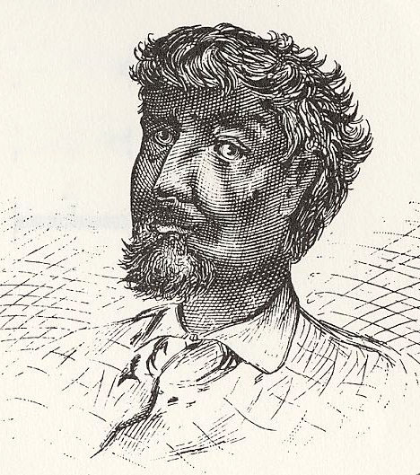
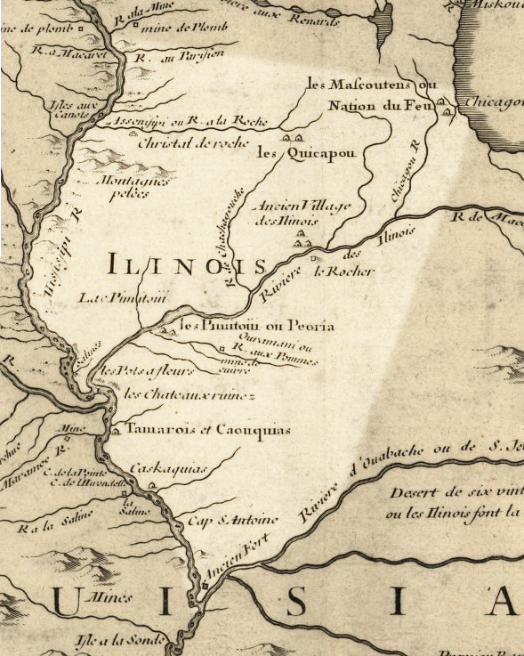
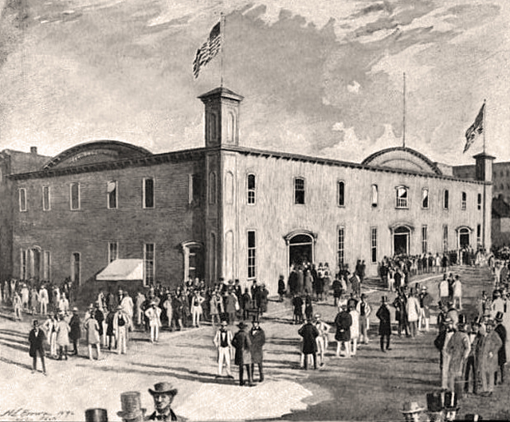
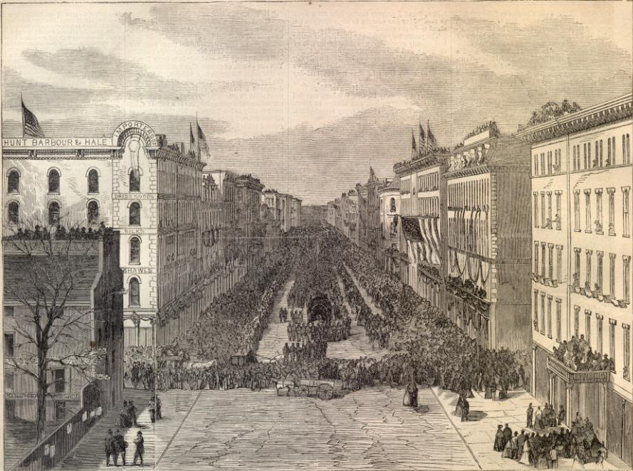

|
During the first half of the 19th century, Chicago grew from a tiny settlement at Fort
Dearborn to an important transportation hub, industrial city, magnet for new immigrants,
and entrepot to the trans-Mississippi West. By the time of the Civil War, it was in a
|

Portrait of Jean Baptiste Point
du Sable. No images were made of Chicago's founder
while he was alive; this was how an artist imagined
him 40 years after his death.
|
position to play a central role in the Union war machine.
Chicago originated as a frontier fur-trading post, established by Jean Baptiste Point
du Sable, a French-Canadian mulatto, in the 1770s. The United States acquired the site
from Britain in the Treaty of Paris in 1783, but did not secure a full cession from local
Native Americans until the 1830s. Fort Dearborn, which the U.S. Army built at the mouth of
the Chicago River in 1803, was destroyed by the Potawatomi Indians in 1812 and rebuilt in
1816. During the Era of Good Feelings, 1816-24, Fort Dearborn continued to serve as a
trading post—a small, heavily fortified white settlement surrounded by Potawotami
villages.
In 1832, the brief but violent Black Hawk War focused national attention on the
northern Illinois Prairie. Sac and Fox Indians who sought to recover their ancestral lands
raided white settlements on the eastern banks of the Mississippi. Although the Potawotami
played no part in the conflict, uneasy federal officials compelled the nation to sell
virtually all of its lands around Fort Dearborn in the aftermath of the war. White
settlers streamed in; by the time Chicago was chartered in 1837, it had approximately
4,000 inhabitants.
Chicago's subsequent rise to prominence was due largely to its strategic position in
two successive transportation networks. Until the 1840s, shipping by boat was the most
|

1781 map showing the site of the newly-founded settlement
of Chicago (top right)
|
economical form of long-distance transportation, and Chicago's location at the southern
tip of Lake Michigan placed it at the western edge of the vast Great Lakes-St. Lawrence
River shipping network. The opening of the Erie Canal in 1825 made it possible to ship
crops and raw materials directly from Chicago to New York and thence to ocean ports
throughout the world. It also gave Chicago easy access to industrial goods from upstate
New York, New England, and Europe. The Illinois and Michigan Canal opened in 1848,
creating a water route from Lake Michigan to the Mississippi River and thus giving Chicago
access to the port of New Orleans as well.
When railroads began to displace boats as the principal means of long-distance
transportation, Chicago became even more important. The first railroad reached Chicago in
1850. By 1856, ten railroad lines converged in the city, and by 1860, Chicago was the
largest rail center in the world, drawing crops and livestock from western farms and
immigrants and manufactured goods from the east. Throughout the 1850s, Senator Stephen
Douglas lobbied to make Chicago the eastern terminus of the proposed transcontinental
railroad. When the line finally opened in 1869, it actually ran from Omaha to Sacramento,
but Chicago remained the railway capital of the Midwest.
Transportation networks fueled local industry. Timber harvested along the northern
Great Lakes floated south to feed the city's sawmills. The meatpacking industry arrived in
the 1830s and expanded greatly with the advent of the railroad; by the 1860s, Chicago
slaughtered and packed half of the nation's hogs. Proximity to farms and railroads
stimulated the manufacture of metal goods. Cyrus McCormick relocated his reaper factory to
Chicago in 1847, in order to be near Midwestern markets, and the city quickly became a
major producer of rails and railway cars as well.
During the 1840s and 1850s, Chicago grew rapidly in population and in its physical
domain. Many of the new immigrants were German, Irish, or Scandinavian. They labored not
just in factories but also in construction, digging canals, laying tracks, and clearing
|

The Wigwam, site of the 1860 Republican Convention.
The fact that it was located in Abraham Lincoln's home state allowed
Lincoln's campaign managers to fill the hall with his supporters.
|
the land that would soon be absorbed by the expanding metropolis. In the 1830s, local
builders developed "Chicago construction," which streamlined the building process by
substituting balloon frames for post-and-beam construction. By 1850, urban problems such
as overcrowding and poor drainage plagued the settlement. Flimsy wooden construction left
the city vulnerable to conflagrations (most notably the Great Chicago Fire of 1871, which
destroyed much of the working-class housing in the city center). Still, despite these issues,
Chicago was chosen as the site for the Republicans' 1860 presidential convention, where
Abraham Lincoln was nominated at the party's candidate.
During the Civil War, the city's economy continued to boom, in part because of the
material demands of the war, and in part because Chicago's main rivals—Cincinnati and St.
Louis—saw their economies disrupted by their proximity to the conflict. Heavy industry
took root in the city, and the first steel rails made in America came off the North
Chicago Rolling Mill in 1865. Chicago-area firms sold millions of dollars' worth of
horses, hardtack, preserved meats, tents, saddles and harnesses, and other supplies to the
state of Illinois and the U.S. Army for the troops. The war also brought stable banking to
Chicago for the first time. The First National Bank of Chicago was founded in July 1863,
and by war's end the city boasted 13 national banks, more than any other city in America.
Chicago was home to approximately 35,000 men of military age, and nearly two-thirds of
them--more than 22,000 individuals—volunteered for service during the war. More than 4,000
of those volunteers did not survive. The city's female population took a leading role in
ameliorating the suffering of Union soldiers, serving in hospitals and organizing numerous
|

Chicago, as it appeared during Abraham Lincoln's
funeral procession in 1865. This was the last stop for the coffin
before it was taken to Springfield, Ill. for interment.
|
"sanitary fairs" to raise money for medicine and other supplies. Chicago also produced one
the North's most popular patriotic songwriters, George Frederick Root, who penned "Battle
Cry of Freedom," "The Vacant Chair," and "Just Before the Battle, Mother."
There were also some exceedingly negative elements to Chicago's Civil War experience.
The city was divided in its support for the conflict, with Irish immigrants most likely to
speak out against the war effort and emancipation. This led to a race riot in 1862, as
well as the suppression of the virulently Democratic Chicago Times. Chicago was
also home to Camp Douglas, one of the Union's largest prisoner of war camps. More than
10,000 Confederates were confined there, with 4,457 of them perishing due to disease
and/or malnutrition.
Chicago's transformation in the 1850s and 1860s inaugurated several trends that would
characterize the city in the decades following the Civil War. The city's population
continued to swell, from 112,000 in 1860 to 500,000 in 1880 and over a million by 1890. It
also continued to diversify, with the arrival of large contingents of Italians, Poles,
Eastern Europeans, and Russian Jews. Nineteenth-century Chicago grew ever more industrial,
noisy, sooty, and—to the minds of many residents—exhilarating, the very symbol of American
industry, innovation, and aggressive development of the American West.
Source: Christopher Bates for the History 139A website.
|